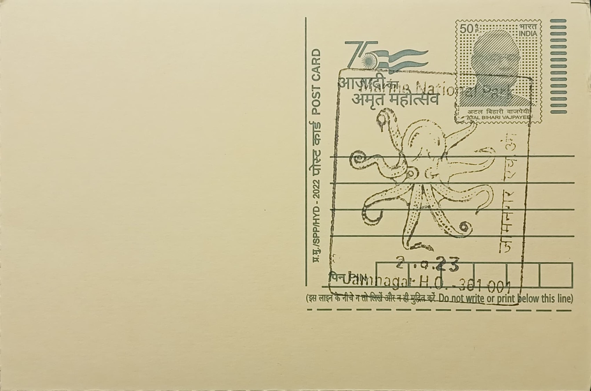

Arabian Sea Octopus
અરબી સમુદ્રનું ઓક્ટોપસ


The common octopus and related cephalopod species found along India's western coast have no single founding story attached to them in the way a temple or monument does, but the choice to feature the Arabian Sea octopus on a postal cancellation tied to Jamnagar draws directly on the identity of the Gulf of Kachchh as a living tidal ecosystem rather than a built heritage site. Local fishing communities along this stretch of coast have long known the creature through the shallow reef flats and rocky intertidal pools exposed at low tide, where it is encountered rather than hunted as a primary catch, and its inclusion on a cancellation marks it as an emblem of the Gulf's lesser-known fauna alongside better-publicised residents such as the whale shark and green sea turtle.
The octopus belongs to the class Cephalopoda within the phylum Mollusca, a soft-bodied group distinguished by a highly developed nervous system, eight muscular arms lined with suckers, and an ability to alter skin colour and texture almost instantaneously for camouflage. Its significance on this cancellation is primarily ecological rather than religious or historical: it stands in for the broader intertidal and subtidal biodiversity of the Gulf of Kachchh Marine National Park and Sanctuary, declared in 1982 as India's first marine national park, which today protects roughly 457 square kilometres of coral patches, mangrove stands, and rocky shores spread across more than forty islands between Jamnagar and the Pakistan maritime border.
Within the park, octopuses are most reliably observed at Narara and Pirotan, two of the islands whose fringing reef flats are shallow enough to walk across in ankle-deep water when the tide recedes, a feature that has made them popular sites for guided reef walks run by the Gujarat Forest Department's marine division. These exposed flats, together with seagrass beds and sponge-covered rock, support an unusually dense assemblage of marine life for an inshore Indian coast, including over forty recorded species of hard and soft coral, numerous sponges, starfish, sea urchins, and eels, within which the octopus functions as a mobile predator feeding on crabs, molluscs and small fish hidden among the rubble and crevices.
A particular point of local pride is that park naturalists and visiting researchers often describe the octopus at Narara and Pirotan as a flagship low-tide sighting comparable in draw, on a smaller scale, to a tiger in Ranthambore or a rhinoceros in Kaziranga, precisely because it is rarely seen in the open and must be searched for among crevices and coral heads during the brief window of exposed reef. Its presence is also used by conservationists to illustrate the vulnerability of the Gulf's intertidal zone, since the same reef flats that allow close public viewing are also exposed to oil tanker traffic, industrial effluent from Jamnagar's refineries and the cumulative pressure of unregulated reef walking, concerns that have shaped stricter permit and guide requirements for visitors in recent years.
Access to Narara and Pirotan today is managed through the Gujarat Forest Department's Marine National Park division in Jamnagar, which issues permits, assigns trained guides for low-tide reef walks, and periodically restricts visitor numbers to limit trampling damage to coral and sponge beds. Ongoing monitoring surveys by state forest researchers and marine biology institutions continue to document octopus sightings alongside coral cover and seagrass health as informal indicators of the reef's condition, feeding into the park's broader management plan for the Gulf of Kachchh. The cancellation's choice of the octopus therefore reflects a deliberate shift toward celebrating the Gulf's working intertidal ecology, administered jointly by forest officials and local fishing communities who depend on the same waters for their livelihood.
| Date of Introduction | January 2, 2011 |
|---|---|
| Address | Senior Postmaster, |
| Jamnagar HO, | |
| Jamnagar (dt.), Gujarat - 361001. |